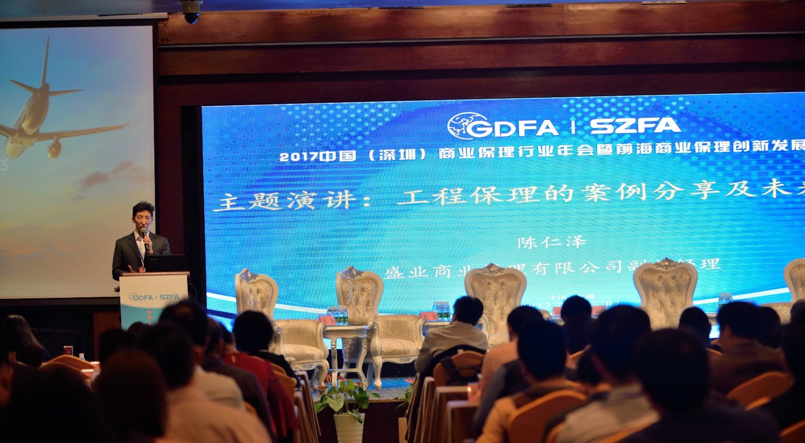
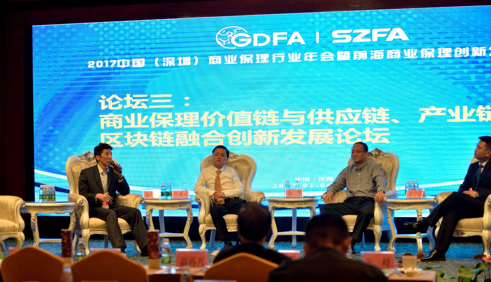

盛业商业保理闪耀2017中国商业保理行业年会
1月6至7日，2017中国（深圳）商业保理行业年会暨前海商业保理创新发展论坛在广东省深圳市举办，盛业商业保理有限公司公司作为协办单位兼副会长单位参加了论坛，盛业保理副总经理陈仁泽应邀参会并作主题演讲。

商务部市场秩序司原巡视员温再兴、商务部外资司原巡视员刘作章、广东省商务厅市场秩序与调节处副处长黄述芸、商务部研究院信用研究所所长、中国服务贸易协会商业保理专委会常务副主任兼秘书长韩家平等出席本次大会并致辞。行业协会代表、商业保理公司及相关单位代表共计300多人参加了会议。
此次大会旨在促进行业内的交流与合作，探索创新业务发展模式，推动行业健康有序发展。围绕政策诉求、融资渠道、信用环境、风险控制、法律实践、供应链金融等行业共同关心的话题，大会组织了6场专题论坛，全面梳理了2016年行业发展现状，探讨经济新常态下存在的机遇和风险，分享前瞻观点和行业经验，为商业保理行业的发展注入了蓬勃动力。

盛业商业保理有限公司副总经理陈仁泽发表主题演讲
期间，陈仁泽应邀发表了题为《工程保理的案例分享及未来趋势》的大会主题演讲，介绍了盛业保理运用反向保理解决方案，深化与核心厂商合作，达成三方共赢的合作模式，受到与会代表的高度关注。会上，陈仁泽还代表盛业保理与参会代表围绕共同关心的话题，面对面沟通交流，进行了热烈讨论，提出了创新性意见和建议，为行业发展带来了全新启示。

陈仁泽先生参加分论坛：商业保理价值链与供应链、产业链、区块链融合创新发展论坛
此次大会的举办得到了社会各界的广泛关注，深圳电视台、证券时报、南方日报、第一财经日报、金融界、和讯网、凤凰网等多家媒体对会议进行了全程报道。